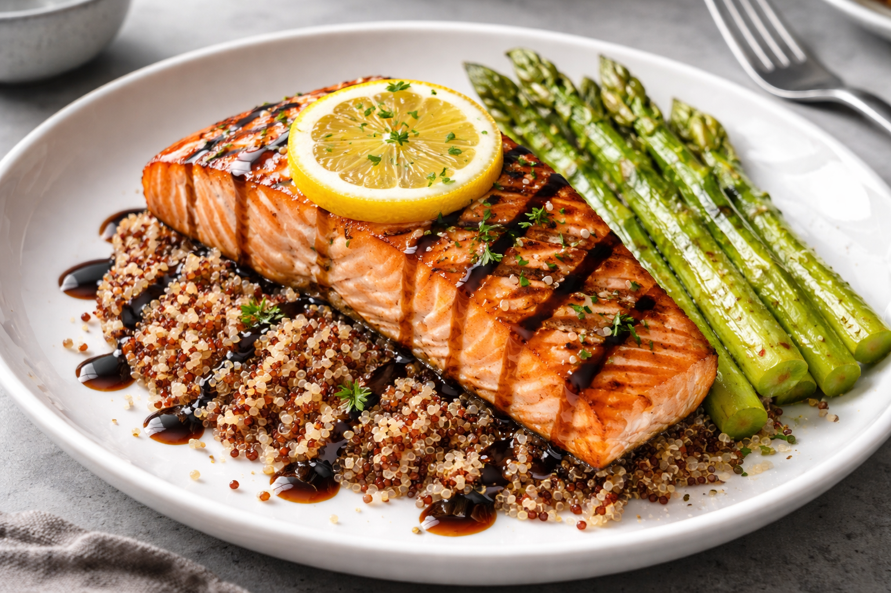

A beautifully balanced, restaurant-quality entrée featuring a perfectly grilled salmon fillet with crisp, caramelized grill marks and a tender, flaky interior. The salmon is finished with a fresh lemon slice and a rich balsamic glaze that adds a subtle sweetness and acidity. It rests on a warm bed of red and white quinoa, offering a nutty texture and wholesome depth, while a side of lightly roasted asparagus provides a fresh, vibrant contrast. Served on modern dishware, this dish is both elegant and nourishing—ideal for a refined weeknight dinner or an impressive plated meal.
ENJOY!